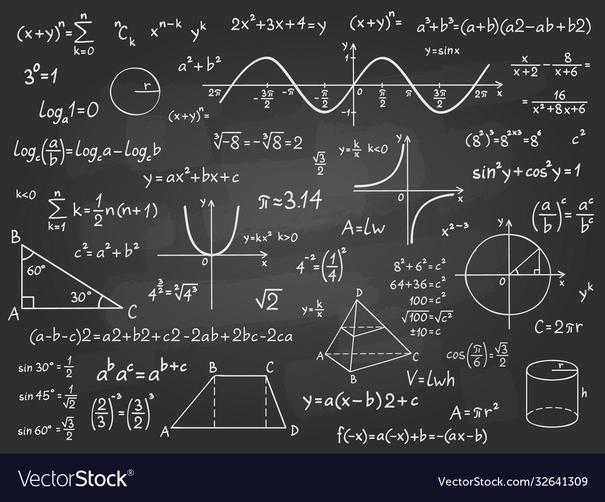

f u n t h i n g s
Mathematics
 Problems in recreational mathematics are puzzles, pure and simple. The adrenaline rush you get when you finally solve a problem which initially seemed impossible is unparalleled. My favorite field of Mathematics is Geometry. Doing math is like playing a game. I enjoy playing with numbers and it gives me an immense level of satisfaction when I'm able to solve a mathematical problem without any hassle.
Chemistry
 Chemistry is by far, one of the most interactive and fun subjects.
Like Maths, chemistry is filled with puzzles, and solving any puzzle can be incredibly satisfying, no matter how much hard work it takes
Chemistry projects don't just go boom. They can glow in the dark, change colors, produces bubbles and change states.
Chemistry is by far, one of the most interactive and fun subjects.
Like Maths, chemistry is filled with puzzles, and solving any puzzle can be incredibly satisfying, no matter how much hard work it takes
Chemistry projects don't just go boom. They can glow in the dark, change colors, produces bubbles and change states.
Data Analysis
 Someone once told me that if you enjoy solving problems and using critical thinking skills, becoming a data analyst may be rewarding for you.
I am really interested to pursue a career in Data Analysis.
Data Analysis is important as it helps businesses understand their customers better, improves sales, improves customer targeting, reduces costs, and allows for creating better problem-solving strategies.
Someone once told me that if you enjoy solving problems and using critical thinking skills, becoming a data analyst may be rewarding for you.
I am really interested to pursue a career in Data Analysis.
Data Analysis is important as it helps businesses understand their customers better, improves sales, improves customer targeting, reduces costs, and allows for creating better problem-solving strategies.